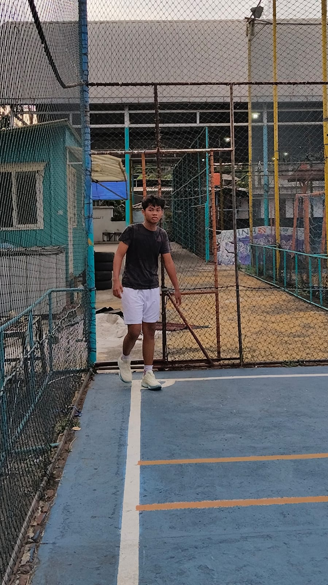
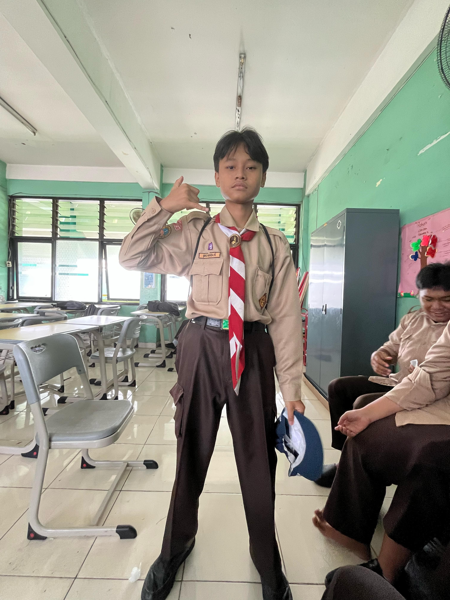
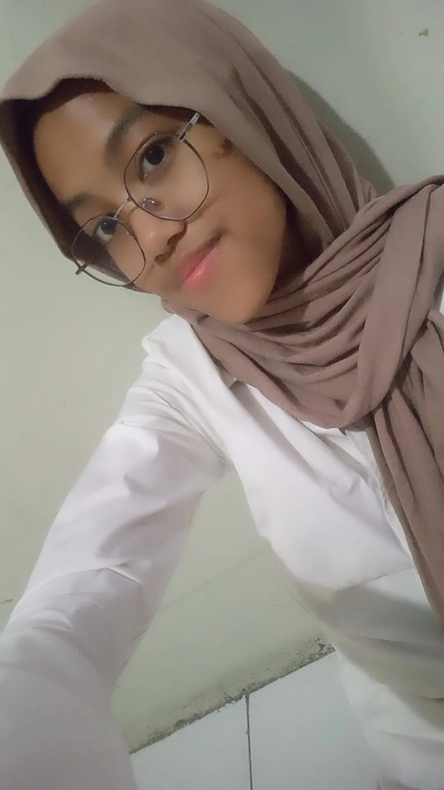

Profile Singkat

Berikut enam orang dengan masing-masing tiga hobi yang berbeda: Dylano Melukis dengan cat air untuk mengekspresikan emosi dan ide, Membuat kerajinan tangan dari tanah liat seperti vas dan patung kecil, Menulis puisi yang terinspirasi dari pengalaman pribadi dan alam. Ibnu Merakit dan memodifikasi komputer untuk gaming dan desain grafis, Membuat aplikasi sederhana menggunakan bahasa pemrograman Python, Mengedit video dan membuat konten untuk media sosial. Rizky Bersepeda gunung di jalur ekstrem dan menantang, Bermain futsal setiap akhir pekan bersama teman-temannya, Mendaki gunung untuk menikmati pemandangan dari ketinggian. Salsa Bermain gitar dan menciptakan lagu sendiri, Mengoleksi dan mendengarkan piringan hitam dari berbagai genre, Membuat cover lagu dan mengunggahnya di YouTube. Layyina Berkebun tanaman organik seperti sayur dan rempah-rempah, Memelihara ikan di kolam mini di halaman rumahnya, Camping di alam terbuka untuk melepas penat dari kesibukan. Zahwa Membuat kue dan mencoba resep baru dari berbagai negara, Memburu kuliner unik di berbagai daerah saat traveling, Menulis blog tentang review makanan yang ia cicipi.
profil individu
DYLANO
Memiliki hobi antaralain: Melukis dengan cat air untuk mengekspresikan emosi dan ide ,Membuat kerajinan tangan dari tanah liat seperti vas dan patung kecil ,Menulis puisi yang terinspirasi dari pengalaman pribadi dan alam.
IBNU
Memiliki hobi antaralain: Merakit dan memodifikasi komputer untuk gaming dan desain grafis ,Membuat aplikasi sederhana menggunakan bahasa pemrograman Python ,Mengedit video dan membuat konten untuk media sosial.
RIZKY

Memiliki hobi antaralain: Bersepeda gunung di jalur ekstrem dan menantang. ,Bermain futsal setiap akhir pekan bersama teman-temannya. ,Mendaki gunung untuk menikmati pemandangan dari ketinggian.
SALSA

Memiliki hobi antaralain: Bermain gitar dan menciptakan lagu sendiri ,Mengoleksi dan mendengarkan piringan hitam dari berbagai genre ,Membuat cover lagu dan mengunggahnya di YouTube.
LAYYINA
Memiliki hobi antaralain: Berkebun tanaman organik seperti sayur dan rempah-rempah ,Memelihara ikan di kolam mini di halaman rumahnya ,Camping di alam terbuka untuk melepas penat dari kesibukan.
ZAHWA

Memiliki hobi antaralain: Membuat kue dan mencoba resep baru dari berbagai negara ,Memburu kuliner unik di berbagai daerah saat traveling ,Menulis blog tentang review makanan yang ia cicipi.